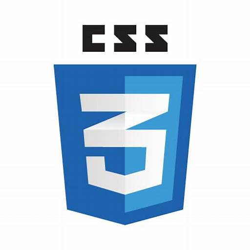

Follow my journey from web development newbie to a Full Stack Web
Developer. This blog chronicles my adventures in coding, from learning
the basics to tackling real-world projects. Here, I'll share my skills,
experience, and the lessons I pick up along the way. Join me as I climb
the coding ladder, one line at a time!
Skills
Html
2 years back Html was the first language that I learned to start my
web development journey, learning html was an easy task for me.
Challenges I faced learning html.
Understanding the Syntax: HTML uses tags and attributes to
define the structure and content of a web page. Memorizing the
tags and how to use them correctly can take some practice.
Cascading Stylesheet Confusion (CSS): While HTML defines
the structure, CSS controls the visual presentation. It's easy to
get tripped up on how HTML and CSS work together, especially when
your website isn't rendering as expected.
Debugging Errors: Typos, missing quotation marks, or
incorrect tag placement can all lead to errors that prevent your
page from displaying correctly. Figuring out where the errors are
can be frustrating.
Visualizing the Layout: HTML code itself isn't very visual.
It can be challenging to imagine how the page will look based
solely on the code, especially for beginners.
Keeping Up with the Latest: HTML standards and best
practices can evolve over time. It's important to stay updated on
changes, which might require revisiting concepts you thought you
had mastered.

Styling
After successfull completion of html, I started to understand the
css and bootstrap part on how to design you webpage, how to style
your webpage and how to make it responsive so that it looks good and
be interactive on all the platforms.
Challenges I faced learning css, bootstrap and a responsive website
CSS Challenges:
Specificity Wars: CSS can get tricky when multiple styles
apply to the same element. Understanding specificity rules and how
to write more specific selectors can be frustrating at first.
Visualizing Cascading: Grasping how styles "cascade" down
the HTML document and how inheritance works can be challenging,
especially when trying to achieve a particular look.
Cross-Browser Compatibility: Different browsers may render
CSS slightly differently. Ensuring your styles look consistent
across various browsers can require extra testing and adjustments.
Positioning and Layout: CSS offers various positioning
properties (absolute, relative, etc.) that can be complex to
master. Creating intricate layouts and aligning elements precisely
can take practice.
HTML consists of elements created using opening and closing tags
(written in angle brackets < and >).
These elements define different sections of your webpage content.
Example of an Element: <p>This is a paragraph.</p>
Here, <p>and </p> are the opening and closing tags for
the paragraph element, and "This is a paragraph" is the content
displayed within that element. Works with CSS and JavaScript:
While HTML defines the structure, CSS (Cascading Style Sheets)
controls the visual appearance of the webpage (fonts, colors,
layouts). JavaScript adds interactivity and dynamic behavior
(animations, form validation). Benefits: Easy to learn, widely
supported by all web browsers, forms the foundation for creating
webpages.
Bootstrap Challenges:
Learning the Framework: Bootstrap has a wide range of
components and classes. Familiarizing yourself with the
documentation and remembering all the options can be overwhelming
at first.
Overusing Classes: It's tempting to rely heavily on
Bootstrap's pre-built styles, potentially leading to repetitive or
generic-looking websites. Learning to customize Bootstrap
effectively is key.
Understanding Grid System: Bootstrap's grid system provides
a powerful way to create responsive layouts. However, wrapping
your head around grid columns, rows, and breakpoints can have a
learning curve.
Responsive Website Challenges:
Media Queries: Media queries are essential for responsive
design, allowing you to adjust styles based on screen size.
Writing effective media queries for various devices and
orientations can be challenging.
Balancing Mobile vs. Desktop: Balancing a website's optimal
layout for both mobile and desktop can be tricky. You might need
to rethink element placement, navigation, and content organization
for different screen sizes.
Responsive Images and Videos: Ensuring images and videos
adapt to different screen sizes while maintaining quality can be
an extra layer of complexity.
Making website interactive
Core Concepts:
Understanding the Syntax: JavaScript has its own syntax for
variables, functions, control flow (if/else, loops), and
object-oriented programming concepts. Grasping these fundamentals
can take practice.
Scope and Closures: JavaScript's concept of scope (where
variables are accessible) and closures (functions that remember
their enclosing scope's variables) can be tricky to understand at
first.
Asynchronous Programming:
Callbacks and Promises: JavaScript heavily relies on
asynchronous programming, where operations might not happen
immediately. Dealing with callbacks (functions passed to be
executed later) and promises (objects representing the eventual
completion of an asynchronous operation) can be confusing.
Handling Errors: Asynchronous code can introduce new types
of errors. Understanding how to handle asynchronous errors
effectively is crucial.
Object-Oriented Programming (OOP):
Prototypal Inheritance vs. Classical Inheritance:
JavaScript uses a prototypal inheritance model which can be
different from classical inheritance found in other languages. It
takes time to get comfortable with this approach.
'this' Keyword: The this keyword in JavaScript can have
different meanings depending on the context, which can lead to
confusion.
The DOM and Browser Environment:
DOM Manipulation: The Document Object Model (DOM)
represents the webpage structure. Interacting with the DOM using
JavaScript to add, remove, or modify elements can be complex,
especially for beginners.
Browser Inconsistencies: Different browsers might have
slight variations in how they interpret JavaScript code. Ensuring
cross-browser compatibility can add complexity.
Certificates
Structure of a webpage and design
These are the certificates I achieved in Html & Css over a period of
time.
These are the certificates I've earned over time, representing my
journey in acquiring valuable skills and knowledge.
Each of these certificates marks a significant milestone in my
professional development.
I'm proud to showcase these certificates, a testament to my
dedication to continuous learning.
Github
These are the certificates I achieved in Github over a period of
time.
From foundational courses to advanced specializations, these
certificates demonstrate my diverse skillset.
My collection of certificates reflects my commitment to staying
up-to-date in an ever-evolving industry.
Earning these certificates has not only expanded my knowledge but
also boosted my confidence in my abilities.
Applying the functionalities
These are the certificates I achieved in Js over a period of time.
More than just qualifications, these certificates represent my
passion for lifelong learning and self-improvement.
I believe these certificates showcase my potential and my
eagerness to take on new challenges.
As I continue to learn and grow, I look forward to adding more
certificates to this collection.
These certificates are a tangible representation of the hard work
and dedication I've invested in my professional growth.
About Me
Hi, there my name is Raj Agarwal and as a web developer, I'm
constantly striving to bridge the gap between creativity and
functionality. I'm excited to share some of the challenges I encounter
on this journey. Whether it's staying up-to-date with the
ever-evolving landscape of web technologies, tackling complex
debugging issues, or navigating the intricacies of responsive design,
there's always something new to learn and conquer. But the
satisfaction of seeing my code come to life as a user-friendly and
visually appealing website makes it all worthwhile. Here, I hope to
connect with other developers, share my experiences, and learn from
the challenges they face as well.